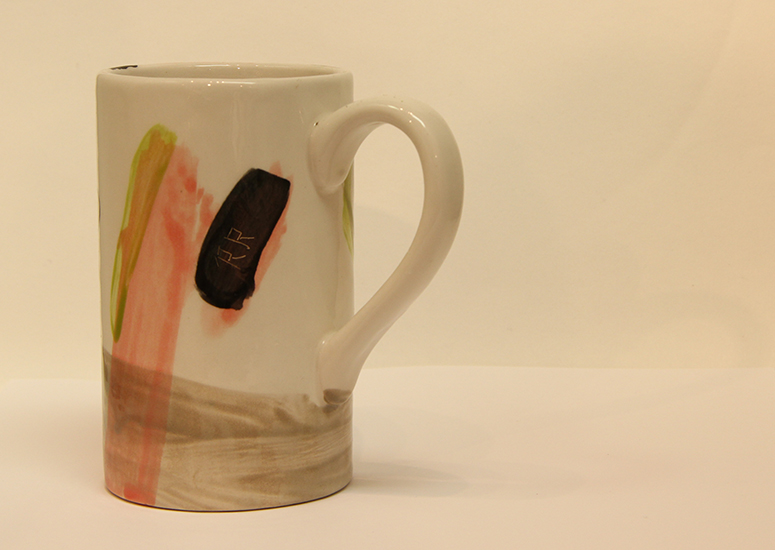
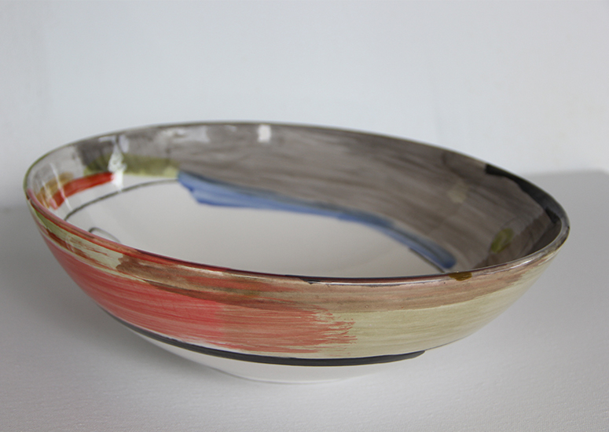
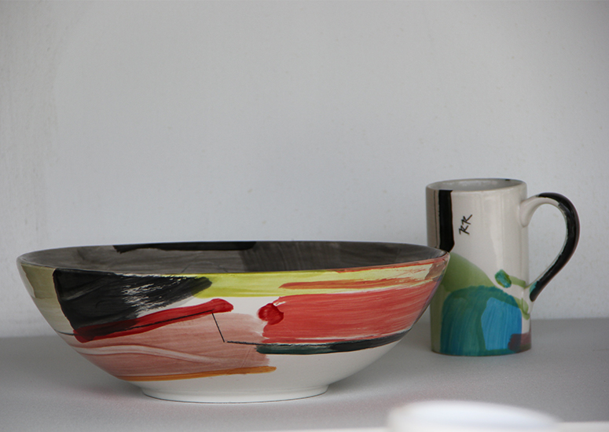
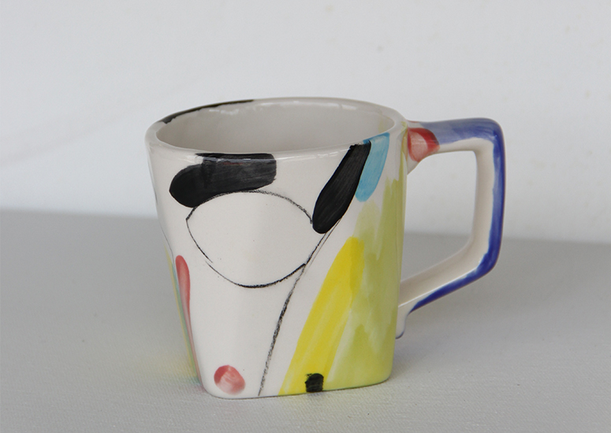

Randy Redfield
Randy Redfield is a 5th generation Oregonian who resides and paints in Sisters. He received his BFA in painting from the University of Oregon in SOME DATE HERE.
Project 43 is the working title of his current series of paintings done on wood panels as opposed to the traditional canvas. The procedure of creating many layers of paint combined with sanding and the use of an electric drill produce a textured color field that is signature to his modern pieces. This format has allowed him the freedom to push the dynamics of the surface to another level while creating a new fluidity in the making of his art.
Considered a lifetime honor for Oregon Artists, in 2013 Randy was chosen to exhibit his work as part of the “Art in the Governor’s Office” program. His Colorful abstract works were displayed in the Governor’s reception area in the Oregon Capitol Building in Salem.
- 
- 
- 
- 